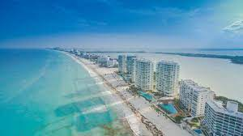
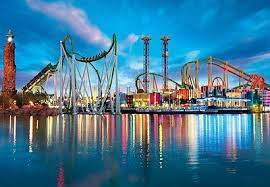

Estos son algunos lugares para vacacionar por el mundo
1 Tahití, Francia
En su capital, Papeete, hallarás interesantes atracciones arquitectónicas
como el Palacio Presidencial, la Casa del Alto Comisionado, la Catedral de
Notre Dame y el Museo Gauguin, referido a la vida y obras del célebre pintor
francés, Paul Gauguin. El Museo de la Perla Negra, único en el mundo que
exhibe rarezas en estas gemas, incluyendo una de las más grandes del mundo,
también está en Papeete.
2 Cancún, México

El destino turístico mexicano más famoso en todo en el mundo. Cancún debe su
popularidad por la belleza de sus playas, divertidos parques de aventuras,
los cercanos yacimientos arqueológicos mayas y a su capacidad hotelera.
Desde la Torre escénica tendrás las más espectaculares vistas de la ciudad y
en sus alrededores podrás bucear en los mejores arrecifes del mar. Solo
tendrás que abordar un barco en la zona hotelera o Puerto Juárez para ir a
Cozumel o Isla Mujeres.
3 Orlando, EE.UU

La ciudad de Orlando es fantástica para disfrutar de vacaciones tanto para
niños y adultos. Sus parques de atracciones como Magic Kingdom, Disney-MGM
Studios y Universal Studios, están entre los mejores del mundo, lo que le
hace ser un destino anhelado para millones de turistas. Pese a que es su
principal atractivo, Orlando no es solo parques. El desarrollo de la ciudad
es admirable con autopistas bien cuidadas, amplia oferta hotelera,
gastronómica y lugares para el entretenimiento adulto del primer mundo.
Monte Everest
El Monte Everest, en la cordillera del Himalaya, es la montaña más alta
del mundo con una altura de 8,848 metros sobre el nivel del mar.
Río Amazonas
El río Amazonas, en América del Sur, es el río más largo y caudaloso del
mundo, con una longitud aproximada de 6,400 kilómetros.
Gran Barrera de Coral
La Gran Barrera de Coral, ubicada en Australia, es el sistema de arrecifes
de coral más grande del mundo. Se extiende por más de 2,300 kilómetros y
alberga una gran variedad de especies marinas.
Desierto del Sahara
El desierto del Sahara, en África, es el desierto cálido más grande del
mundo, abarcando aproximadamente 9.2 millones de kilómetros cuadrados.
Gran Muralla China
La Gran Muralla China, construida durante varias dinastías chinas, es una
de las estructuras más impresionantes del mundo y tiene una longitud de
más de 21,000 kilómetros.
Selva Amazónica
La selva amazónica es la selva tropical más extensa del mundo y alberga
una increíble diversidad de plantas y animales. Se estima que contiene
alrededor del 10% de todas las especies conocidas en el planeta.
Océano Pacífico
El océano Pacífico es el océano más grande del mundo, cubriendo
aproximadamente el 30% de la superficie terrestre. También es conocido por
albergar la Fosa de las Marianas, el punto más profundo de la Tierra, con
una profundidad de aproximadamente 11,000 metros.
Monte Kilimanjaro
El Monte Kilimanjaro, situado en Tanzania, es la montaña independiente más
alta de África y uno de los volcanes más altos del mundo. Su cumbre nevada
es un destino popular para los excursionistas.
Parque Nacional de Yellowstone
El Parque Nacional de Yellowstone, en Estados Unidos, es el primer parque
nacional del mundo y es conocido por sus géiseres, incluido el famoso
géiser Old Faithful.
Arrecife de Coral de Belice
El Arrecife de Coral de Belice, declarado Patrimonio de la Humanidad, es
el sistema de arrecifes de coral más grande del hemisferio occidental y
alberga una gran variedad de especies marinas, como tiburones, tortugas y
manatíes.